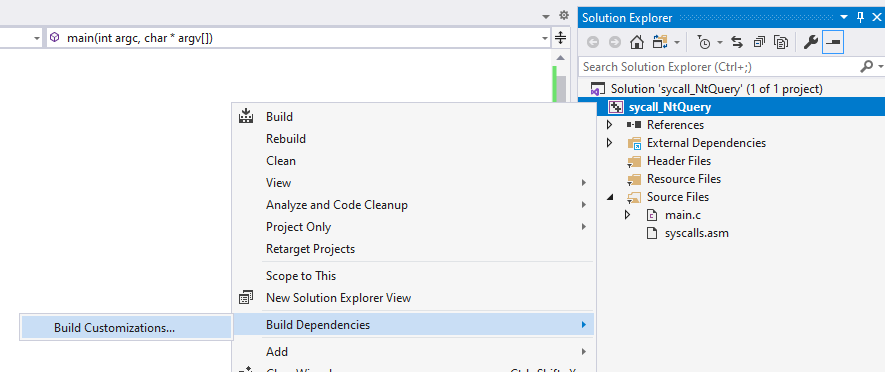
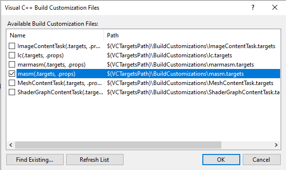
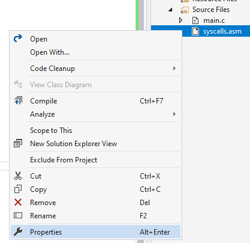
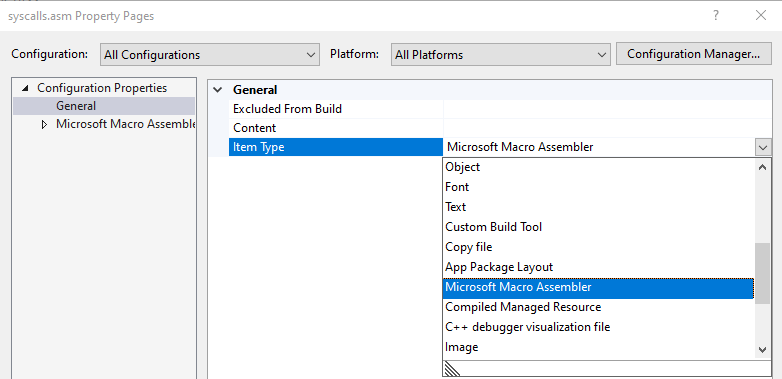
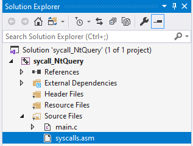
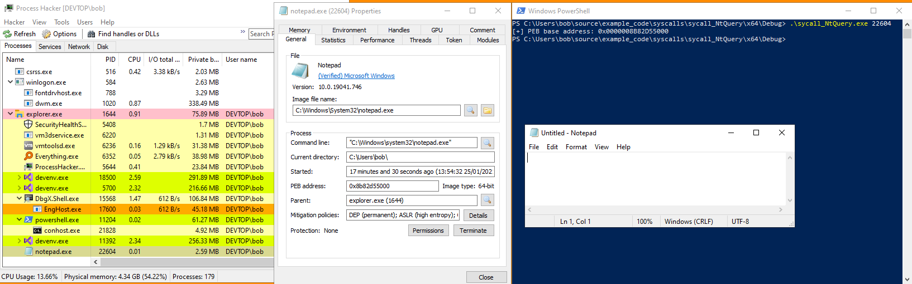

# How-to on 64bit Windows
•
https://www.ired.team/offensive-security/defense-evasion/using-syscalls-directly-from-visual-studio-to-bypass-avs-edrsTo execute syscalls ourself we just need to write the assembly code found in Ntdll.dll and link a typedef of the corresponding Nt function to it.
## Set up MASM to compile x64 assembly
Visual Studio doesn't support inline assembly for 64bit binaries, so all assembly code has to go in a separate file.
Add a new source file call
syscalls.asm (the name can be anything.asm)
Right click on your project in the Solution Explorer > Build Dependencies > Build Customizations:
Enable
masm to compile the x64 assembly code.
Right click on your
syscalls.asm file > Properties
Set the item type to
Microsoft Macro AssemblerDone!
Now all 64bit assembly code written in
syscalls.asm will be compiled by MASM.
## Example Code - syscall NtQueryInformationProcess
In this demo I'm calling
NtQueryInformationProcess to grab the PEB base address of a target process.
Here's how my project looks:
syscalls.asmHere's my
syscalls.asm file.
In here I've written the assembly code to syscall
NtQueryInformationProcess.code
syscall_NtQueryInformationProcess proc
mov r10, rcx
mov eax, 19h
syscall
ret
syscall_NtQueryInformationProcess endp
end
And here is my main program code.
At the top I have decalred an
extern syscall_NtQueryInformationProcess function.
extern tells the compiler that the definition of the function (the actual code) exists somewhere else within my program (in syscall.asm).
Below that is all preamble that sets up the parameters for calling NtQueryInformationProcess.
#include <stdio.h>
#include <Windows.h>
#include <winternl.h>
extern __kernel_entry NTSTATUS syscall_NtQueryInformationProcess(
HANDLE ProcessHandle,
PROCESSINFOCLASS ProcessInformationClass,
PVOID ProcessInformation,
ULONG ProcessInformationLength,
PULONG ReturnLength
);
int main(int argc, char* argv[])
{
if (argc != 2)
{
printf("not enough arguments :/ \n");
printf("usage: %s <process ID> \n", argv[0]);
return EXIT_FAILURE;
}
int process_id = atoi(argv[1]);
HANDLE h_process = NULL;
PROCESS_BASIC_INFORMATION pbi = { 0 };
h_process = OpenProcess(PROCESS_ALL_ACCESS, FALSE, process_id);
syscall_NtQueryInformationProcess(h_process, ProcessBasicInformation, &pbi, sizeof(pbi), NULL);
printf("[+] PEB base address: 0x%p \n", pbi.PebBaseAddress);
return 0;
}
### Demo
Here I've queried Notepad.exe, which has a PID of 22604, for its PEB base address.
We can see that our code has syscalled
NtQueryInformationProcess successfully and grabbed the correct PEB base address.
